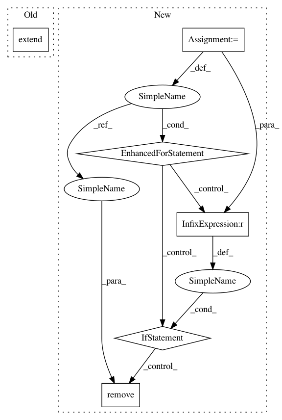

9aa1aa24c0eaafb95f3a0a580de9df38e803e039,torchreid/samplers.py,RandomIdentitySampler,__iter__,#RandomIdentitySampler#,40
Before Change
ret = []
for batch_idxs in list_container:
ret.extend(batch_idxs)
return iter(ret)
def __len__(self):
After Change
final_idxs = []
while len(avai_pids) >= self.num_pids_per_batch:
selected_pids = random.sample(avai_pids, self.num_pids_per_batch)
for pid in selected_pids:
batch_idxs = batch_idxs_dict[pid].pop(0)
final_idxs.extend(batch_idxs)
if len(batch_idxs_dict[pid]) == 0:
avai_pids.remove(pid)
return iter(final_idxs)
def __len__(self):
return self.length
In pattern: SUPERPATTERN
Frequency: 3
Non-data size: 6
Instances
Project Name: KaiyangZhou/deep-person-reid
Commit Name: 9aa1aa24c0eaafb95f3a0a580de9df38e803e039
Time: 2018-08-16
Author: k.zhou@qmul.ac.uk
File Name: torchreid/samplers.py
Class Name: RandomIdentitySampler
Method Name: __iter__
Project Name: Qiskit/qiskit-aqua
Commit Name: 20c1bcdad47bfc6c0bdbdc510ee76598d64c380c
Time: 2019-04-29
Author: stefan@swoerner.de
File Name: qiskit/aqua/components/uncertainty_models/multivariate_distribution.py
Class Name: MultivariateDistribution
Method Name: build
Project Name: Qiskit/qiskit-aqua
Commit Name: 20c1bcdad47bfc6c0bdbdc510ee76598d64c380c
Time: 2019-04-29
Author: stefan@swoerner.de
File Name: qiskit/aqua/components/uncertainty_models/univariate_distribution.py
Class Name: UnivariateDistribution
Method Name: build
Project Name: KaiyangZhou/deep-person-reid
Commit Name: 9aa1aa24c0eaafb95f3a0a580de9df38e803e039
Time: 2018-08-16
Author: k.zhou@qmul.ac.uk
File Name: torchreid/samplers.py
Class Name: RandomIdentitySampler
Method Name: __iter__